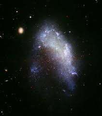

Elliptical Galaxy
An elliptical galaxy is a type of galaxy. They are generally formed by mergers of different galaxies.
In the early universe, smaller proto galaxies are attracted to each other via gravitational attraction.
Upon collision, a loss of order is experienced within the galaxy, causing a large blob like structure to form.
This can also occur with 2 spiral galaxies merging and colliding with each other.
.jpeg)
Spiral Galaxy
A spiral galaxy is a type of galaxy. Starting with a rotating cloud of gas, gravity forces it to collapse into a rotating disk.
Gas starts to climb up in the center, causing a prominent bulge surrounded by the thin rotating disk.
Density waves cause the gas in the arms to climb up and form bright blue stars, giving the arms it bright blue look,
where the center of the galaxy is reddish yellow, filled with the oldest stars in the galaxy.
The galaxy we reside in, known as the Milky Way Galaxy, is a spiral galaxy.

Irregular Galaxy
An irregular galaxy is a type of galaxy. They consist of galaxies that have an irregular shape.
This could be caused for multiple reasons. One is the galaxy being to small to form any actual shape.
Spiral arms need strong gravity and organized rotation. Another cause is galaxy mergers, where when one galaxy passes by another,
or even collide, the gravity between the two galaxies can cause deformties in the shape, like the large and small magellanic clouds near the Milky Way.
